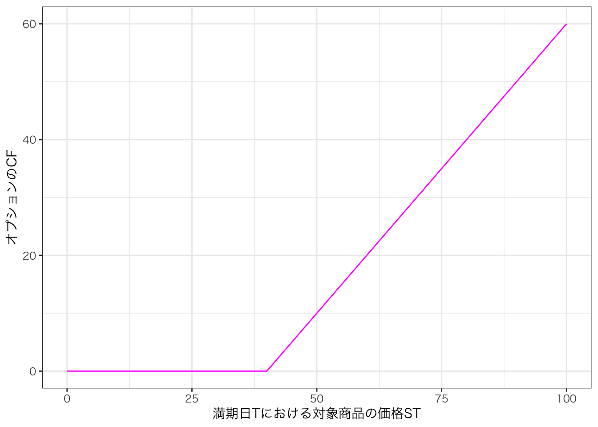
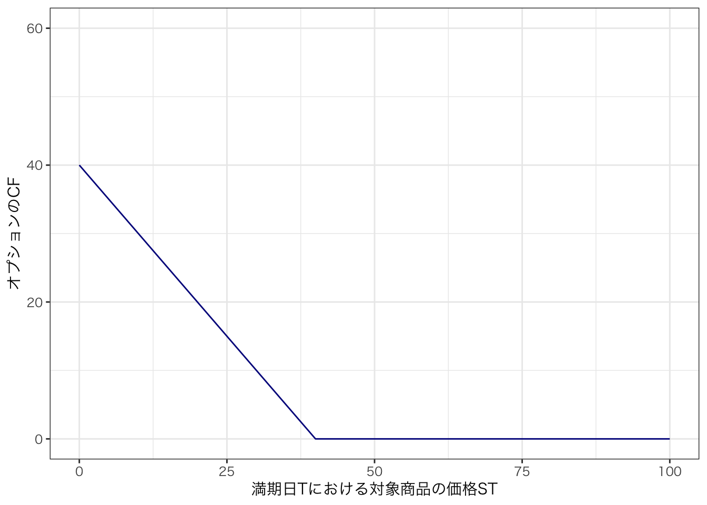
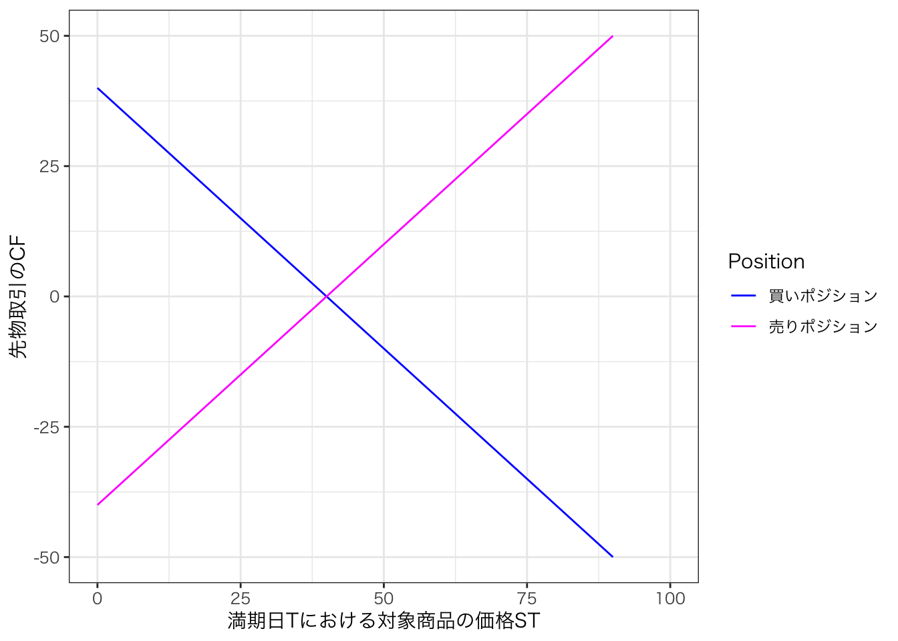

pacman::p_load(tidyverse, ggthemes, knitr, kableExtra)7 裁定価格理論
7.1 状態価格と資産価格
ここでは，裁定価格理論(arbitrage pricing theory: APT)において重要な概念である状態価格(state price)について説明します。 状態価格を理解するために、無裁定機会について学習します。
まずは次の例をみてみましょう。
例1
- 今日( t=0 )から1年後( t = 1 )の状態について2通りの状態(状態1，状態2)が存在し，次のような2つの金融資産(A，B)が存在する。
- 金融資産 A を今日1単位購入すると，1年後に状態 1である場合，キャッシュフロー(CF_A)として1千円が発生し，状態2である場合には，CF_A は発生しない。
- 金融資産 B を今日1単位購入すると，1年後に状態 1である場合，CF_B は発生しないが，状態2である場合には，1千円の CF_B が発生する。
- 2つの金融資産 A，B の今日の価格 P_A, P_B はそれぞれ 0.8 千円，0.6 千円である。
ここで，もし金融資産 C が存在し，1年後に状態1である場合には2千円のCFが発生し，状態2である場合には4千円のCFが発生するとき，金融資産Cの価格 P_C はいくらになるか？
まとめると次のような設定になります。
| 状態 | 資産AのCF | 資産BのCF | 資産CのCF |
|---|---|---|---|
| 状態1 | 1 | 0 | 2 |
| 状態2 | 0 | 1 | 4 |
- 資産 A : P_A = 0.8
- 資産 B : P_B = 0.6
- 資産 C : P_C = ?
ここで，金融資産Aを2単位，金融資産Bを4単位からなるポートフォリオPを考える。 このポートフォリオPの1年後のCFは，
- 状態1 : CF_A \times 2 \text{単位} + CF_B \times 4 \text{単位} = 2 \times 1 + 4 \times 0 = 2
- 状態2 : CF_A \times 2 \text{単位} + CF_B \times 4 \text{単位} = 2 \times 0 + 4 \times 1 = 4
よって，
- 金融資産Cの1年後のCFは，ポートフォリオPの1年後のCFと同じ 1
CFが同じなら，価値(価格)は同じになるなら，
- 金融資産Cの価格 P_Cは，ポートフォリオPの価格となる。よって
P_C = P_A \times 2 + P_B \times 4 = 0.8 \times 2 + 0.6 \times 4 = 4.0
金融資産Cの価格が P_C = 3.0 ならどうなるのか，考えてみましょう。 投資戦略は，資産 Aを2単位購入し，資産 Bを4単位空売り，資産 Cを1.5単位購入するとします。
t=0時点でのキャッシュフローは，
0.8 \times 2 + 0.6 \times 4 - 3.0 \times 1.5 = 0
となり， t=1 時点でのキャッシュフローは，
- 状態1 : - (1 \times 2 + 0 \times 4 + 2.0 \times 1.5) = 1
- 状態2 : - (0 \times 2 + 1 \times 4 + 4.0 \times 1.5) = 2
すなわち，t = 0 において，CF = 0 でありながら，t = 1 時点において，いずれの状態においても CF > 0 が実現できる。 これを裁定機会(arbitrage opportunity)という。
このような裁定機会が存在すると，市場参加者はその機会を利用して利益を得ることができるため，市場は効率的でないといえる。
次に，金融資産Cの価格 P_C = 5.4 ならどうなるか考えてみよう。
投資戦略は，金融資産Cを1単位空売り，金融資産Aを3.0単位，金融資産Bを5.0単位購入するとします。
t=0 時点でのキャッシュフローは，
5.4 \times 1 - (0.8 \times 3.0 + 0.6 \times 5.0) = 0
となり，t=1 時点でのキャッシュフローは，
- 状態1 : - 2.0 \times 1 + ( 1.0 \times 3.0 + 0.0 \times 5.0) = 2
- 状態2 : - 4.0 \times 1 + ( 0.0 \times 3.0 + 1.0 \times 5.0) = 1
すなわち，t=0 時点において資金0でありながら，t=1 時点のいずれの状態においても CF > 0 が実現できる。 これも裁定機会である。
7.2 無裁定機会
7.2.1 一物一価の法則の下での資産価格
APTでは裁定機会が存在しないと仮定します。 これをノー・フリーランチや一物一価の法則とも呼びます。
無裁定機会が成立するとき，2つ以上の資産があって，それらの資産が同じCFを生み出すならば，それらの資産価格は同じになる。
\begin{aligned} \text{金融資産Cの価格} P_C &= \text{ポートフォリオPの価格} \\ &= 2.0 \times P_A + 4.0 \times P_B\\ &= 2.0 \times 0.8 + 4.0 \times 0.6 = 4.0 \end{aligned}
金融資産Aは状態1が発生したときのみ1単位のCFを支払う金融資産であり、金融資産Bは状態2が発生したときのみ1単位のCFを支払う金融資産である。 このような資産を状態請求権付き証券(state-contingent claim)とかアロー・ドブリュー証券(A-D証券)という。 A-D証券の現在の価格のことを状態価格(state price)という (上の例では、P_A = 1.0、 P_B = 0.6 )。 状態価格のベクトルのことを状態価格ベクトルという。 状態価格は正の値を取る。
7.2.2 一物一価の法則と市場均衡
金融資産Cの価格が P_C = 3.0 ならば、投資家は高い価格の資産(あるいはポートフォリオ)を空売りし、安い価格の資産(金融資産C)を購入する裁定取引を行おうとする。 したがって、金融資産Cに対する需要が上昇し、金融資産Cの価格が上昇する。
いま、金融資産Cの価格を P_C = 5.4 とすると、投資家は金融資産Cを空売りし、安い価格の資産(ポートフォリオ)を購入する裁定取引を行おうとする。 したがって、金融資産Cに対する需要は低下し、金融資産Cの価格が下落する。
金融資産Cの価格を P_C = 4.0 とすると、投資家には裁定取引を行う機会がない。したがって、金融資産に対する需要に変化はなく、結果価格も変化しない。 すなわち、金融資産Cの市場は均衡状態にある。
言い換えると、一物一価の法則が成立するとき、市場の需給は均衡状態にある。
7.3 資産価格と状態価格
7.3.1 状態価格を用いた資産価格の導出
状態価格ベクトル (q_1 , \dots , q_M) が与えられているとき、裁定機会が存在しない状況下において、ある金融資産の将来CFのベクトル (D_1, \dots , D_M) をA-D証券のポートフォリオを用いて表現することができます。 そして、金融資産の価格は状態価格ベクトルと第1期のCFベクトルとの内積となります。
例2 : 状態数2のケース
\begin{aligned}
P_C &=
\begin{pmatrix}
q_1 & q_2
\end{pmatrix}
\begin{pmatrix}
D_1 \\
D_2
\end{pmatrix}
\\
& = q_1 D_1 + q_2 D_2 \\
& = 0.8 \times 2 + 0.6 \times 4 \\
& = 4.0
\end{aligned}
例3 : 状態数4のケース
今日(t=0)から1年後(t=1)の状態について4通りのシナリオ(状態1〜状態4)が考えられるとする。 状態価格ベクトルが (1.0\ 0.7\ 0.5\ 1.2) で表されるとき、1年後のCFベクトルが (1\ 5 \ 3 \ 1) となる金融資産の価格 P_D を求めましょう。
\begin{aligned} P_D &= P_D &= \begin{pmatrix} 1.0 & 0.7 & 0.5 & 1.2 \end{pmatrix} \begin{pmatrix} 1 \\ 5 \\ 3 \\ 1 \end{pmatrix} \\ &= 1.0 \times 1 + 0.7 \times 5 + 0.5 \times 3 + 1.2 \times 1 \\ &= 7.2 \end{aligned}
7.3.2 まとめ
状態数がMであり、状態価格ベクトルが \boldsymbol{q}^{\top} = (q_1, \dots, q_M) 、資産 i のCFベクトルが \boldsymbol{D}_i = (D_{i,1}, \dots, D_{i,M}) ならば、資産 i の価格 P_i は次のように表される。
\begin{aligned} P_i &= \boldsymbol{q}^{\top} \boldsymbol{D}_i \\ &= q_1 D_{i,1} + \dots + q_M D_{i,M} \\ &= \sum_{m=1}^{M} q_m D_{i,m} \end{aligned} \tag{7.1}
Equation 7.1 は、状態価格ベクトルを知ることができれば、資産価格を計算できることを示している。
7.3.3 応用：コール・オプションとプット・オプション
オプション取引とは，，原資産（対象資産）を，将来の一定期日までに，特定の価格（権利行使価格）で売り付け・買い付けをする権利（オプション）の取引をいう。 原資産を買う権利についてのオプションをコール，売る権利についてのオプションをプットという。
権利行使価格を K (一定の値)，満期日 Tにおける対象商品の価格を S_T とすると，満期日におけるコール・オプションのCFは，
\begin{aligned} \begin{cases} S_T - K & \text{if } S_T > K \text{のとき権利を行使} \\ 0 & \text{if } S_T \leq K \text{のとき権利を放棄} \end{cases} \end{aligned} より， \max(S_T - K, 0) となる。
図にすると次のようになる。
# データの準備
df <- data.frame(
ST = seq(0, 100, 1) # 証券価格
)
df$call <- pmax(df$ST - 40, 0) # コールオプションのCFを計算
ggplot(df) + aes(x = ST, y = call) + geom_line(color = "magenta") +
xlab("満期日Tにおける対象商品の価格ST") + ylab("オプションのCF") +
xlim(0, 100) + ylim(0, 60) +
theme_bw(base_family = "HiraKakuProN-W3")
つぎに，満期日におけるプット・オプションのCFは，
\begin{aligned} \begin{cases} 0 & \text{if } S_T > K \text{のとき権利を放棄} \\ K - S_T & \text{if } S_T \leq K \text{のとき権利を行使} \end{cases} \end{aligned} より， \max(K - S_T, 0) となる。
図にすると，
df <- df |>
mutate(
put = pmax(40 - ST, 0)
)
ggplot(df) + aes(x = ST, y = put) + geom_line(color = "darkblue") +
xlab("満期日Tにおける対象商品の価格ST") + ylab("オプションのCF") +
xlim(0, 100) + ylim(0, 60) +
theme_bw(base_family = "HiraKakuProN-W3")
また，オプションには権利行使のタイミングにより，ヨーロピアン・オプションとアメリカン・オプションに分けられる。 権利行使がオプション満期日のみに限定されているオプションをヨーロピアン・オプションといい，権利行使がオプション満期日までの期間であればいつでも行使できるオプションをアメリカン・オプションといいます。
またオプション取引の買い方が権利行使したときに利益が生じる状態のことを，イン・ザ・マネーという。 コール・オプションでは，権利行使価格 K が対象資産の価格 S_T より下回る場合(K < S_T)，プット・オプションでは，権利行使価格 K が対象資産の価格 S_T より上回る場合( K > S_T )がイン・ザ・マネーである。
オプション取引の買い方が権利行使したときに損失が生じる状態のことを，アウト・オブ・ザ・マネーといい，何の損益も生じない状態のことを，アット・ザ・マネーといいます。
例4 : コール・オプションの価格
今日(t=0)から1年後(t=1)の状態について5通りのシナリオ(状態1，状態2，状態3，状態4，状態5)が存在し，状態価格ベクトル(q_1, q_2, q_3, q_4, q_5) = (0.15, 0.15, 0.15, 0.24, 0.27)が与えられているとする。 X社株式と株式Xのコール・オプションについてのCFが，以下の表のように与えられているとき，X社の株価，コール・オプションの価格を求めましょう。
| 資産 | 状態1 | 状態2 | 状態3 | 状態4 | 状態5 |
|---|---|---|---|---|---|
| X社株式 | 8 | 6 | 3 | 0 | 0 |
| コールX (K=2) | 6 | 4 | 1 | 0 | 0 |
| コールX (K=4) | 4 | 2 | 0 | 0 | 0 |
解答
価格は状態価格ベクトルとCFベクトルの内積で計算できます。 つまり， P_i = \sum _{m = 1}^M q_m D_{i,m} で計算できるため，次のように株価とオプション価格を計算します。
X社の株価 P_X は，
0.15 \times 8 + 0.15 \times 6 + 0.15 \times 3 + 0.24 \times 0 + 0.27 \times 0 = 2.55
となり，コール・オプションの価格は次のように計算されます。 K=2 の場合，
0.15 \times 6 + 0.15 \times 4 + 0.15 \times 1 + 0.24 \times 0 + 0.27 \times 0 = 1.65
K=4 の場合，
0.15 \times 4 + 0.15 \times 2 + 0.15 \times 0 + 0.24 \times 0 + 0.27 \times 0 = 0.9
となる。
例5 : プット・オプションの価格
今日(t=0)から1年後(t=1)の状態について5通りのシナリオ(状態1，状態2，状態3，状態4，状態5)が存在し，状態価格ベクトル(q_1, q_2, q_3, q_4, q_5) = (0.15, 0.15, 0.15, 0.24, 0.27)が与えられているとする。 X社株式と株式Xのプット・オプションについてのCFが，以下の表のように与えられているとき，X社の株価，プット・オプションの価格を求めましょう。
| 資産 | 状態1 | 状態2 | 状態3 | 状態4 | 状態5 |
|---|---|---|---|---|---|
| X社株式 | 8 | 6 | 3 | 0 | 0 |
| プットX (K=2) | 0 | 0 | 0 | 2 | 2 |
| プットX (K=4) | 0 | 0 | 1 | 4 | 4 |
解答
プット・オプションの価格は次のように計算されます。
K=2 の場合，
0.15 \times 0 + 0.15 \times 0 + 0.15 \times 0 + 0.24 \times 2 + 0.27 \times 2 = 1.02
K=4 の場合，
0.15 \times 0 + 0.15 \times 0 + 0.15 \times 1 + 0.24 \times 4 + 0.27 \times 4 = 2.19
となります。
オプション価格と権利行使価格 K との関係は次のようになります。 コール・オプションにおいては，権利行使価格 K が上昇すると，オプション価格は減少します。 プット・オプションにおいては，権利行使価格 K が上昇すると，オプション価格は増加します。
7.3.4 応用2：先物取引と先渡し取引
先物取引(フューチャーズ取引)や先渡し取引(フォーワード取引)とは，事前に設定した取引条件で将来の一定期日に原資産（対象資産）の売買を行う契約を結ぶことである。 約定した受渡価格を K ，満期日 T における対象商品の価格を S_T とすると，満期日に先物取引の買い方には， S_T - K の価値が生じ，売り手にはK - S_Tの価値が生じる。
先物取引と先渡し取引の違いは，前者は取引が金融商品取引所を通じて行われるのに対して，後者は相対取引となることである。
図にすると，次のようになります。
# 先物取引 K = 40 の買いポジションのペイオフ
K = 40
K <- 40
ST <- seq(0, 100, 1) # 証券価格
df <- data.frame(
ST = ST, # STをデータフレームに含める
futures = ST - K,
forward = K - ST
)
# データをlong形式に変換（凡例をつけるため）
df_long <- df |>
pivot_longer(cols = c("futures", "forward"), names_to = "Position", values_to = "Payoff")
# グラフの描画
ggplot(df_long, aes(x = ST, y = Payoff, color = Position)) +
geom_line() +
scale_color_manual(values = c("futures" = "magenta", "forward" = "blue"),
labels = c("買いポジション", "売りポジション")) +
xlab("満期日Tにおける対象商品の価格ST") +
ylab("先物取引のCF") +
xlim(0, 100) +
ylim(-50, 50) +
theme_bw(base_family = "HiraKakuProN-W3")
例6 : 先物契約の価値
ある投資家がX社の株式を t=1 時点で売買する複数の先物契約を過去 (t=0) に結んでいるとする。 約定した受渡価格を K で表す。 ここでは、先物の買い手側(ロングポジション側)に立って説明する。
K=2 の場合、 t=1 時点になると、投資家はX社の株式を2円で買うことになる。
t=1 時点での株価
| 状態1 | 状態2 | 状態3 | 状態4 | 状態5 | |
|---|---|---|---|---|---|
| X社株式 | 8 | 6 | 3 | 0 | 0 |
この先物のロングポジションの t=1 時点でのCFは、
| 状態1 | 状態2 | 状態3 | 状態4 | 状態5 | |
|---|---|---|---|---|---|
| 先物契約 | 6 | 4 | 1 | -2 | -2 |
よって、この先物のロングポジションの t=0 での価値 FV は，
FV = 0.15 \times 6 + 0.15 \times 4 + 0.15 \times 1 + 0.24 \times (-2) + 0.27 \times (-2) = 0.63 となる。
K=3 の場合、この先物のロングポジションの t=1 時点でのCFは、
| 状態1 | 状態2 | 状態3 | 状態4 | 状態5 | |
|---|---|---|---|---|---|
| 先物契約 | 5 | 3 | 0 | -3 | -3 |
となり、よって、この先物のロングポジションの t=0 での価値 FV は，
FV = 0.15 \times 5 + 0.15 \times 3 + 0.15 \times 0 + 0.24 \times (-3) + 0.27 \times (-3) = -0.33
先物の売り手側(ショートポジション側)に立って説明すると、
- 受渡価格 K=2 のときの先物のショートポジションの t=0 での価値(FV)は、
FV = 0.15 \times (-6) + 0.15 \times (-4) + 0.15 \times (-1) + 0.24 \times 2 + 0.27 \times 2 = -0.63
- 受渡価格 K=3 のときの先物のショートポジションの t=0 での価値(FV)は，
FV = 0.15 \times (-5) + 0.15 \times (-3) + 0.15 \times 0 + 0.24 \times 3 + 0.27 \times 3 = 0.33
7.3.5 先物価格
先物取引の価格は，無裁定条件を満たすために，次のような関係が成り立ちます。
- FV>0 ならば、そのポジションの注文の需要が増加
- FV<0 ならば、そのポジションの注文の授業が減少
FV=0 が成立する(裁定機会がない)ように決定される受渡価格(K)を先物価格といいます。 例6において、先物価格(K)は、
(8-K) \times 0.15 + (6-K) \times 0.15 + (3-K) \times 0.15 + (-K) \times 0.24 + (-K) \times 0.27 = 0
つまり、
K=2.656
7.3.6 先物のキャリー公式
X社の株式の t=0 時点の価格が 2.55 であるとすると、株式を t=0 時点で購入すれば、支払は 2.55 となる。 X社の株式の t=1 時点の先物価格が 2.656 であるとすると、購入することを t=0 時点で約束すれば、 t=1 時点での支払は 2.656 となる。
2つの違いは、株式を購入する場合は、t=0 時点での支払いが発生するが、先物取引の場合は、t=1 時点での支払いが発生するという点である。 先物の場合、それまでの期間まで資金運用する機会が存在する。 すなわち、安全資産のリターンを r_f とすると、先物のキャリー公式が成立する。
\text{先物価格} = \text{現物価格} \times (1 + r_f)
例6の場合、 r_f = 4.167\% となる。
7.4 リスクプレミアムとリスク調整割引公式
例7
今日(t=0)から1年後(t=1)の状態が5つ(状態1、状態2、状態3、状態4、状態5)存在し、状態価格ベクトル (q_1, q_2, q_3, q_4, q_5) = (0.15, 0.15, 0.15, 0.24, 0.27) が与えられているとする。 国債とX社とY社の社債・株式についてのCF(1年後の価格)が、以下の表のように示されているとき、それぞれの価格を求めなさい。
| 状態1 | 状態2 | 状態3 | 状態4 | 状態5 | |
|---|---|---|---|---|---|
| 状態確率 | 0.2 | 0.2 | 0.2 | 0.2 | 0.2 |
| 国債 | 1 | 1 | 1 | 1 | 1 |
| X社社債 | 1 | 1 | 1 | 1 | 0 |
| Y社社債 | 1 | 1 | 1 | 0 | 1 |
| X社株式 | 8 | 6 | 3 | 0 | 0 |
| Y社株式 | 15 | 10 | 0 | 0 | 4 |
図にすると、次のようになります。
7.4.0.1 国債の価格
国債の価格もいままでと同様に、状態価格ベクトル q とCFベクトル D の内積で計算できます。
国債の価格 = 0.15 \times 1 + 0.15 \times 1 + 0.15 \times 1 + 0.24 \times 1 + 0.27 \times 1 = 0.96 となり、将来の期待CFは
CF = 0.20 \times 1 + 0.20 \times 1 + 0.20 \times 1 + 0.20 \times 1 + 0.20 \times 1 = 1 となる。 リスクフリー・レート(国債の利回り r )は、国債の価格と将来の期待CF(将来の国債価格)との関係から、
1 + r = \frac{t=1 \text{の期待CF} }{t=0 \text{の国債価格(投資額)}} = \frac{1}{0.96} \tag{7.2}
r について解くと、
r = 4.167\%
となる。
Equation 7.2 より、国債の価格は将来の期待CFの割引現在価値で計算される。 ここで、割引に用いられる 1+r は割引率とも呼ばれており、 国債(無リスク資産)の割引率は、リスクフリー・レートである。
7.4.0.2 社債の価格
無リスク資産であった国債とは異なり、社債はリスク資産であるため、リスクを考慮する必要がある。
X社の社債の価格は、
\begin{aligned} P_X &= 0.15 \times 1 + 0.15 \times 1 + 0.15 \times 1 + 0.24 \times 1 + 0.27 \times 0 = 0.69\\ CF_X &= 0.20 \times 1 + 0.20 \times 1 + 0.20 \times 1 + 0.20 \times 1 + 0.20 \times 0 = 0.80 \end{aligned}
社債の利回りを r_cとすると、現時点 (t=0) の社債の価格と将来(t=1)の社債の期待CFとの関係は次のようになる。
1 + r_c = \frac{\text{社債の将来の期待}CF}{\text{社債の現時点の価格(投資額)}} = \frac{0.80}{0.69} \tag{7.3}
r_c について解くと、
r_c = 15.942\% \tag{7.4}
国債の価格と同様に、社債の価格は、Equation 7.3 式より、将来の期待CFの割引現在価値として次のように計算される。
社債の価格 = \frac{社債の将来の期待CF}{1 + r_c}
ここで、社債の割引率はリスクを考慮したリスク調整割引率であり、 1+r ではなく 1+r_c となっていることに注意しよう。
社債の割引率が 1+r ではなく 1+r_c となる理由は、X社の社債の場合、 状態5でCFがゼロと也、デフォルトの可能性が存在するからである。 したがって、投資家(市場)はデフォルトの可能性を考慮して、国債よりも高いリターンを要求する。このときX社の社債のリスクプレミアム(\lambda _c)は、
\lambda _c = r_c - r = 11.775\% \tag{7.5}
確認問題：Y社の株価、割引率、リスクプレミアムを求めなさい。 また、Y社とX社社債の価格が異なっているならば、なぜかを答えなさい。
7.4.0.3 株式の価格
X社の株価
\begin{aligned} P_X &= 0.15 \times 8 + 0.15 \times 6 + 0.15 \times 3 + 0.24 \times 0 + 0.27 \times 0\\ &= 2.55 \end{aligned} また、将来の期待CFは
\begin{aligned} CF_X &= 0.20 \times 8 + 0.20 \times 6 + 0.20 \times 3 + 0.20 \times 0 + 0.20 \times 0 \\ &= 3.4 \end{aligned}
株式のリターンをRとすると、現時点 (t=0) の株価と将来(t=1)の株式の期待CFとの関係は次のようになる。
1 + R = \frac{\text{株式の将来の期待}CF}{\text{株式の現時点の価格(投資額)}} = \frac{3.4}{2.55} \tag{7.6}
R について解くと、
R = 33.333\% \tag{7.7}
国債の価格と同様に、Equation 7.6 式より、期待CFの割引現在価値として表すことができる。 つまり、株価も将来の期待CFの割引現在価値として表すことができ、その割引率は 1+R となる。 X社の株式のリスクプレミアム(\lambda _s)は次のとおりである。
\lambda _s \equiv R - r = 33.333 - 4.168 = 29.17\% \tag{7.8}
確認問題：Y社の株価，割引率，リスクプレミアムを求めなさい。
7.4.1 まとめ
国債の価格、社債の価格、株価のいずれも、期待CFの割引現在価値として表すことができる。 つまり資産価格 P_i は次のように表せる。
P_i = \frac{\text{期待}CF}{1 + \beta}
ここで、1 + \beta は割引率であり、資産価格の属性(リスク)に応じて異なるものである。
このように、状態(生起)確率、割引率を知ることができれば、資産価格を計算することができる。 しかしながら、状態(生起)確率と割引率を知ることは困難であるため、上記以外の方法で資産価格を計算する方法がないかを考える。
7.5 リスク中立確率公式
リスク中立確率とは、市場参加者がリスクを考慮せずに投資判断を行うと仮定したときの確率を指します。 リスク中立確率を用いると、リスクプレミアムを考慮せずに価格を決定することができます。
(割引)国債の価格 P_i を次のように求めます。
\begin{aligned} P_i &= q_1 \times 1 + q_2 \times 1 + q_3 \times 1 + q_4 \times 1 + q_5 \times 1 \\ &= q_1 + q_2 + q_3 + q_4 + q_5 \end{aligned} \tag{7.9}
次に、国債の価格と期待CFの関係は次式で表されます。
P_i = \frac{期待CF}{1 + \beta}
ここで期待CFは，
CF_i = 0.2 \times 1 + 0.2 \times1 + 0.2 \times 1 + 0.2 \times 1 + 0.2 \times 1 = 1
ここで， 1 + \beta = 1 + r より，
1 + r = \frac{1}{q_1 + q_2 + q_3 + q_4 + q_5}
一般に，状態数が M 個あり，各状態における状態価格ベクトルが (q_1, q_2, \dots , q_M) であるならば，リスクフリーレート(無リスク資産のリターン)は，
1 + r = \frac{1}{\sum _{m = 1}^M q_m} \tag{7.10}
ここで q_m^* = (1 + r) q_m , m = 1,2, \dots , M を定義するとき，この q_m^* を 状態 m のリスク中立確率とよぶ。2
例8
例7のリスク中立確率を計算する。
r = 0.04167 ， q_1 = 0.15，q_2 = 0.15， q_3 = 0.15， q_4 = 0.24， q_5 = 0.27 なので，
\begin{aligned} q_1^* &= 0.4167 \times 0.15 = 0.15625 \\ q_2^* &= 0.4167 \times 0.15 = 0.15625 \\ q_3^* &= 0.4167 \times 0.15 = 0.15625 \\ q_4^* &= 0.4167 \times 0.24 = 0.250 \\ q_5^* &= 0.4167 \times 0.27 = 0.28125 \\ \end{aligned}
状態数が M であり，状態価格ベクトルが (q_1, q_2, \dots q_M)， 資産 i のCFベクトルが (D_{i,1}, D_{i,2}, \dots, D_{i,M}) ならば，資産 i の価格 (P_i) は，
\begin{aligned} P_i &= q_1 \times D_{i,1} + q_2 \times D_{i,2} + \dots + q_M \times D_{i,M}\\ &= \sum_{m=1}^{M} q_m D_{i,m} \end{aligned} \tag{7.11}
Equation 7.11 式をリスク中立確率(q_m^*)を用いて表すと，
\begin{aligned} P_i &= \frac{q_1^*}{1 + r} D_{i,1} + \frac{q_2^*}{1 + r} D_{i,2} + \dots + \frac{q_M^*}{1 + r} D_{i,M}\\ &= \frac{1}{1 + r} \sum_{m=1}^{M} q_m^* D_{i,m} \end{aligned}
\sum _{m=1}^{M} q^*_m D_{i,m} は，リスク中立確率の下で計算された将来の期待CFとなる。 ここで，1+r はリスク中立確率の下での資産 i の割引率であり，それはリスクフリーレートに等しい。
資産 i の価格は，リスク中立確率の下で計算された将来の期待CFの割引現在価値として表現できる。 状態価格ベクトルを知ることができれば，資産価格を計算することができる。
7.6 状態価格の導出
ここまで状態価格は所与(given)として議論してきましたが，任意の証券から状態価格を求めることができます。
Equation 7.11 より，資産 i i = 1, \dots, N について，以下の式が成立します。
P_i = \sum_{m=1}^{M} q_m D_{i,m}
行列で表現すると，
\begin{aligned} \begin{pmatrix} P_1 \\ P_2 \\ \vdots \\ P_N \end{pmatrix} = \begin{pmatrix} D_{1,1} & D_{1,2} & \dots & D_{1,M} \\ D_{2,1} & D_{2,2} & \dots & D_{2,M} \\ \vdots & \vdots & \ddots & \vdots \\ D_{N,1} & D_{N,2} & \dots & D_{N,M} \\ \end{pmatrix} \begin{pmatrix} q_1 \\ q_2 \\ \vdots \\ q_M \end{pmatrix} \end{aligned}
まとめて書くと，
\begin{aligned} \underset{N \times 1}{\boldsymbol{P}} = \underset{N \times M}{\boldsymbol{D}} \underset{N \times 1}{\boldsymbol{q}} \end{aligned} \tag{7.12}
定理 状態価格の存在定理
市場において，無裁定機会が成立していることは，Equation 7.12 式を満たす状態価格ベクトル \boldsymbol{q} が存在することと同値である。
証明はテキスト第5章を参照
例9：状態価格の導出
今日(t=0)から1年後(t=1)の状態が5つ(状態1、状態2、状態3、状態4、状態5)存在するとする。 国債とX社、Y社の社債・株式についての現在の価格及び1年後のCF(価格)が、以下の表のように示されているとき、それぞれの価格を求めなさい。
| 価格 | 状態1 | 状態2 | 状態3 | 状態4 | 状態5 | |
|---|---|---|---|---|---|---|
| 状態確率 | 0.2 | 0.2 | 0.2 | 0.2 | 0.2 | |
| 国債 | 0.96 | 1 | 1 | 1 | 1 | 1 |
| X社社債 | 0.69 | 1 | 1 | 1 | 1 | 0 |
| Y社社債 | 0.72 | 1 | 1 | 1 | 0 | 1 |
| X社株式 | 2.55 | 8 | 6 | 3 | 0 | 0 |
| Y社株式 | 4.83 | 15 | 10 | 0 | 0 | 4 |
このとき金融資産CはポートフォリオPによって複製されるという。↩︎
すべての q_m は正であるので， q_m^* > 0 であり，また \sum _{m=1}^M q_m^* = \boldsymbol{1} (この計算は以下を参照)であることから，状態 m = 1,2, \dots M の確率と見なすことができる。 \sum _{m = 1}^M q_m^* = \sum _{m = 1}^M (1 + r) q_m = (1+r) \sum _{m=1}^M q_m 。 ここで Equation 7.10 式より， \sum_{m = 1}^M q_m = \frac{1}{1+r} であることから，\sum _{m = 1}^M q_m^* = 1 となる。↩︎